What is Scientific Research?

Université de Lorraine | ENSGSI
2023-12-06
Objectives of the Module
Knowledge : enseignement supérieur et recherche
Know-how :
- Search on pertinent scientific databases
- Sensibilization of a crical thinking of research
- Writing
Savoir-faire : écrire une synthèse bibliographique
Savoir-faire : proposer un projet de recherche sur la base des manques de la - bibliographie
Compétence : être capable de rechercher des documents scientifiques, d’évaluer leur pertinence, de proposer un sujet de recherche et de présenter un résultat de recherche
Evaluation du module - Dossier
Each day, a final output will be putted on ARCHE.
Etat de l’art bibliographique préparatoire à un travail de recherche à de votre sujet de stage (10 pages).
- Title
- Abstract
- Résumé en anglais
- Résumé en français
- Synthèse (8 pages)
- References
Introduction to the Scientific Research
Agenda for today
Introduction to the Scientific Research
Why bother to study the scientific research?
Everything start with a good research question !
Research in the context of France
What are the difference between
Engineering and Research (in Innovation) ?
Engineering vs Research (in Innovation)
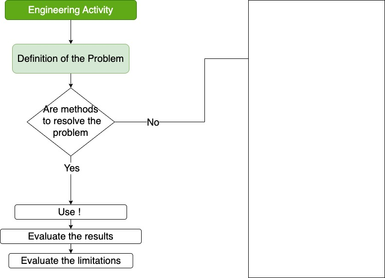
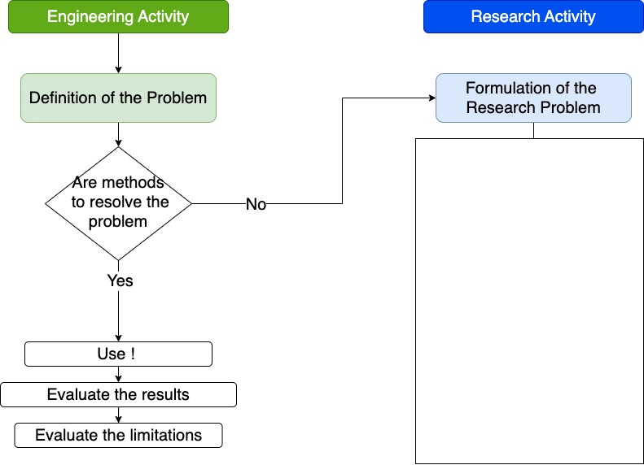
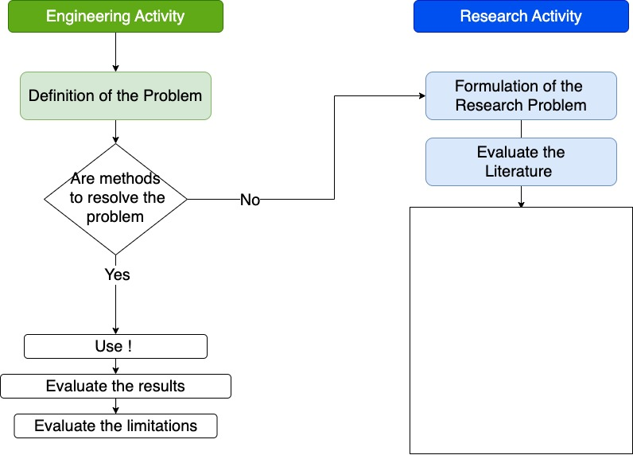
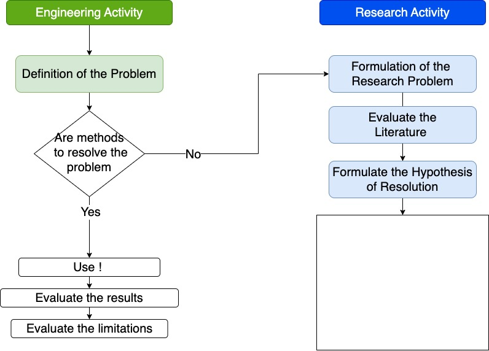
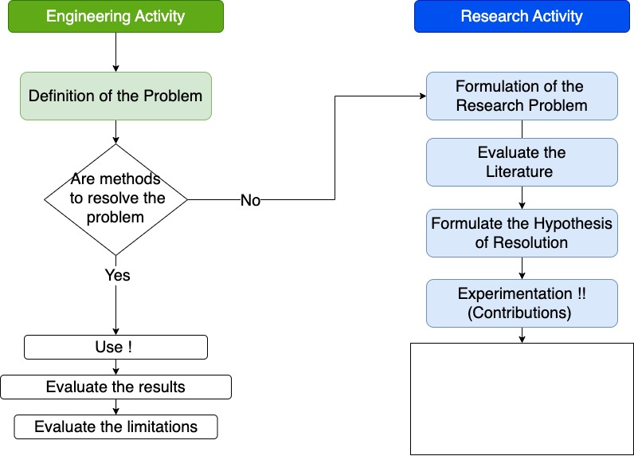
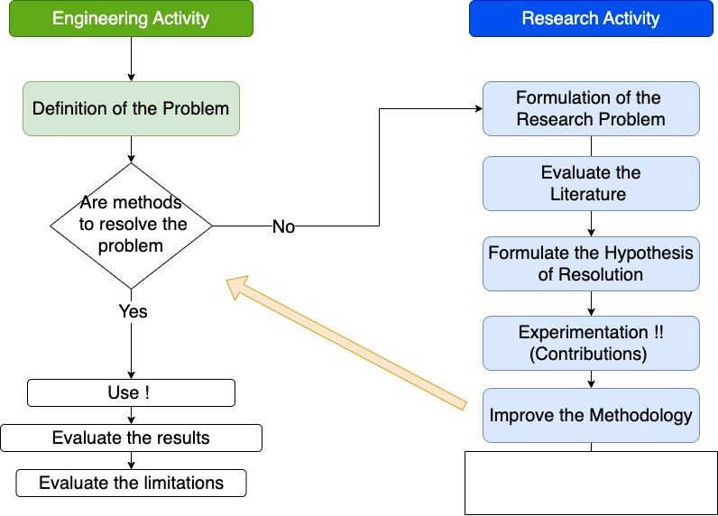
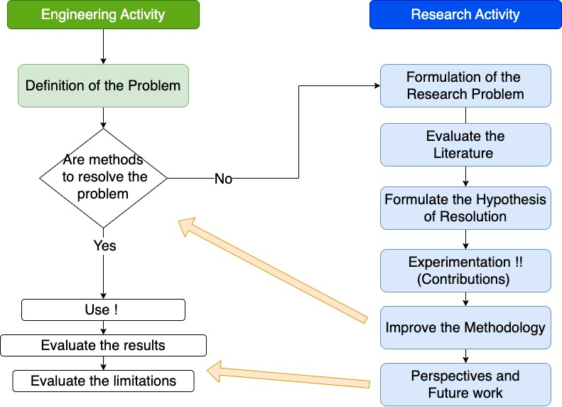
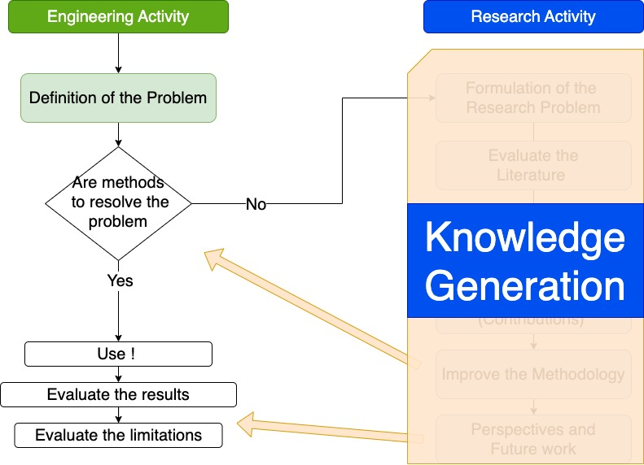
What is Scientific research ?
“The process of finding solutions to a problem after a thorough study and analysis of the situational factors.” (Sekaran and Bougie 2016)
Based on two research elements:
Observations (information or data)
Theory (arguments)


Scientific approaches
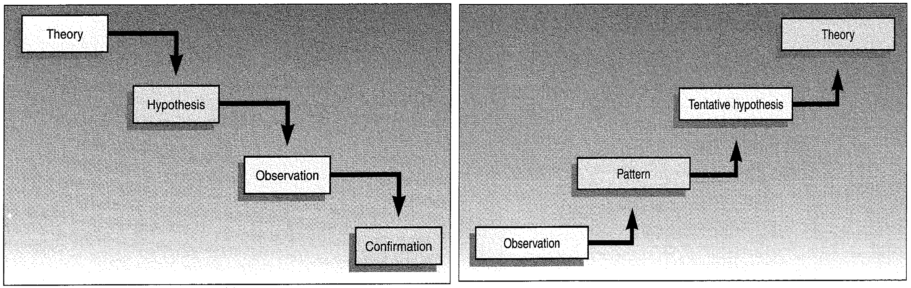Scientific approaches
Deduction
la méthode par laquelle on va de la cause aux effets, du principe aux conséquences, du général au particulier.
Induction
La règle découle de l’observation répétée de faits réels, contingents.
Mental model for the research development?
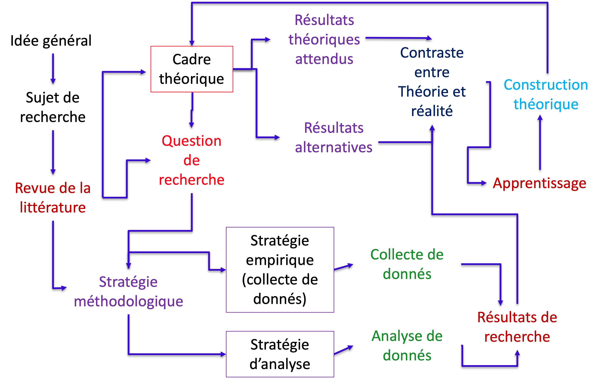Research conceptualization
Mental model for the research development?

Research conceptualization
In more details…
Why bother to study the scientific research?
Agenda for today
Introduction to the Scientific Research
Why bother to study the scientific research?
Everything start with a good research question !
Research in the context of France
Pourquoi devrais-je me renseigner sur le processus de recherche ?
Why should I learn about the research process?
- To become a pertinent intel
Research and the “Managers”
To work as a researcher (PhD., R&D Department)
As an Innovation Manager you are going to face problems that your R&D department or and external researcher (open-innovation) can help you to solve.
- Help to make evidence-based decisions: e.g. Public politics
- Help in the strategic and future decision
Everything start with a good research question !
Agenda for today
Introduction to the Scientific Research
Why bother to study the scientific research?
Everything start with a good research question !
Research in the context of France
Everything start with a good research question
- Descriptive: (‘What’, ‘When’, ‘Where’, ‘Who’ or ‘How’)
e.g. ’What percentage of coachees
report that coaching helped them
with a problem they experienced?
- Explanatory (‘Why’?)
e.g. ‘Why did 65% of coachees report that coaching helped them with a problem they experienced?’
Good research question: Descriptive + Explanatory
Being able to provide meaningful explanations requires answers to ‘why’ (i.e. explanatory) questions in addition to ‘what’ (i.e. descriptive) questions.
For example:
‘How effective is the coaching process at helping coachees to solve a problem they experience and what are the reasons for this?’
‘To what extent is the coaching process effective at helping coachees solve a problem and why?’
Examples of ERPI Research
What kind of type of research can we do?
What kind of type of research can we do?
- Basic Vs. Applied
- Exploratory
- Descriptive
- Causal
What kind of type of research can we do?
- Basic Vs. Applied
- Exploratory
- Not much is known about a particular phenomenon;
- Existing research results are unclear or suffer from serious limitations;
- The topic is highly complex; or
- There is not enough theory available to guide the development of a theoretical framework
What kind of type of research can we do?
- Basic Vs. Applied
- Exploratory
- Descriptive
- Causal
- Not much is known about a particular phenomenon;
- Existing research results are unclear or suffer from serious limitations;
- The topic is highly complex; or
- There is not enough theory available to guide the development of a theoretical framework
What kind of type of research can we do?
- Basic Vs. Applied
- Exploratory
- Descriptive
- Causal
- Obtain data that describes the topic of interest
- Understand the characteristics of a group in a given situation
- Think systematically about aspects in a given situation
What kind of type of research can we do?
- Basic Vs. Applied
- Exploratory
- Descriptive
- Causal
- Whether or not A causes change to B
- X causes variable Y. So, when variable X is removed or altered in some way, problem Y is solved
Research in the context of France
Agenda for today
Introduction to the Scientific Research
Why bother to study the scientific research?
Everything start with a good research question !
Research in the context of France
Science and technology observatory (OST)
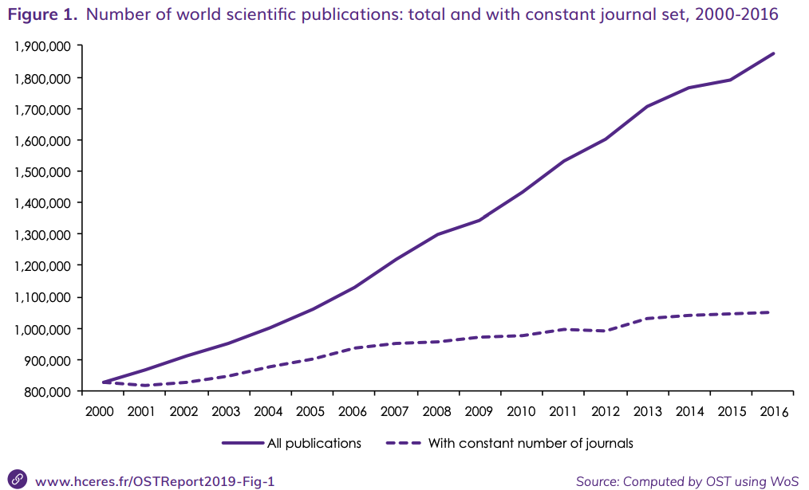
Science and technology observatory (OST)
High Council for Evaluation of Research and Higher Education - HCERES
{kind=link}
Science and technology observatory (OST)

Research Ecosystem in general
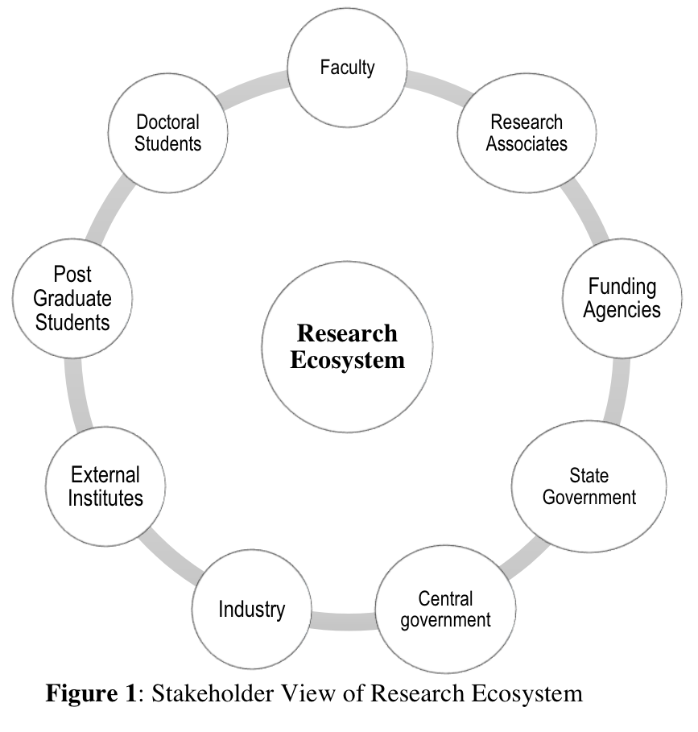
Research Ecosystem in France
Teaching and research
- Universities (IUT, Ecoles d’ingénieurs)
- INSA , ENSI , CNAM , …
Private companies (Big/Smee’s)
Sagem; Véolia; PSA Thales
TEA; JEI; FITLE; myXtramile…
Funding Agencies
National & EU - Ministeries - ANR - ADEME
Introduction
Presentation